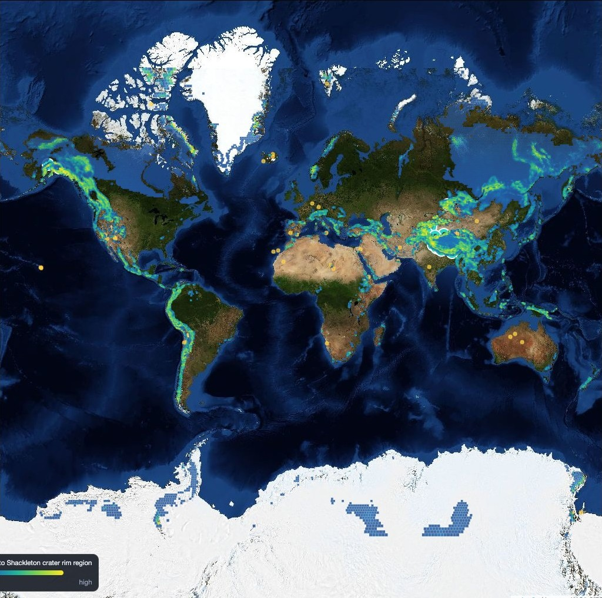
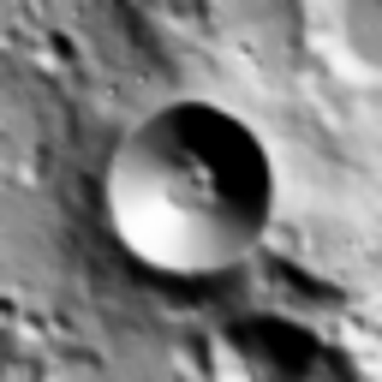
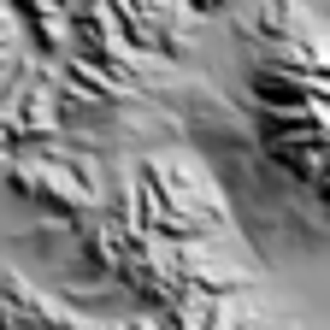
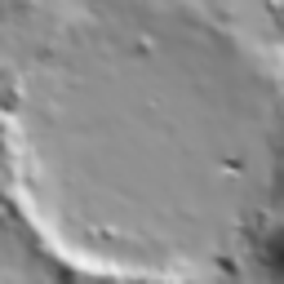
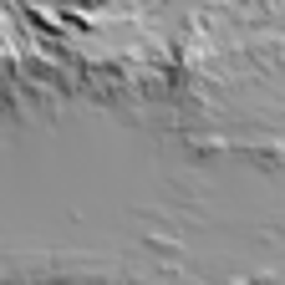
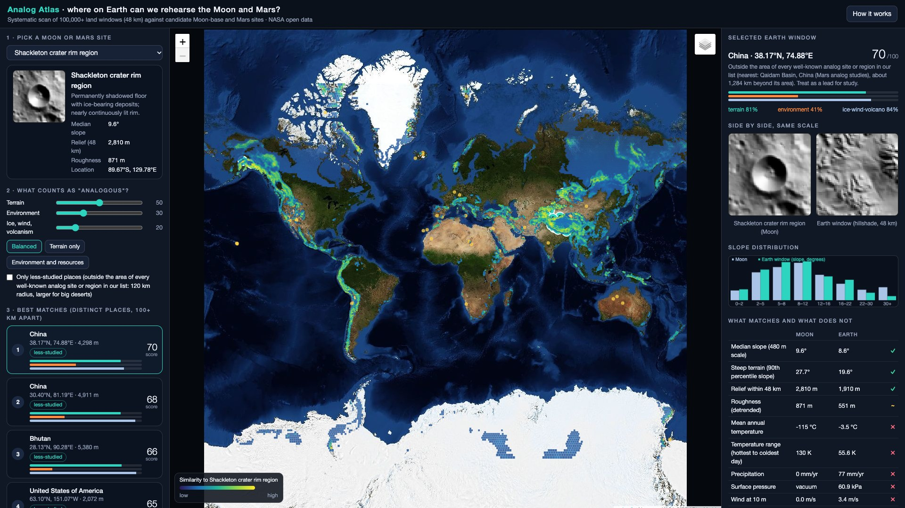
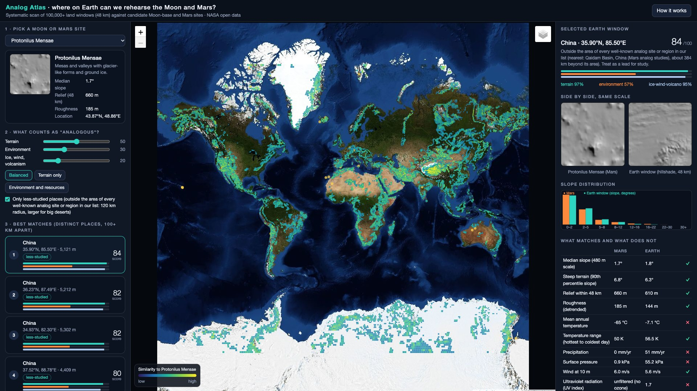
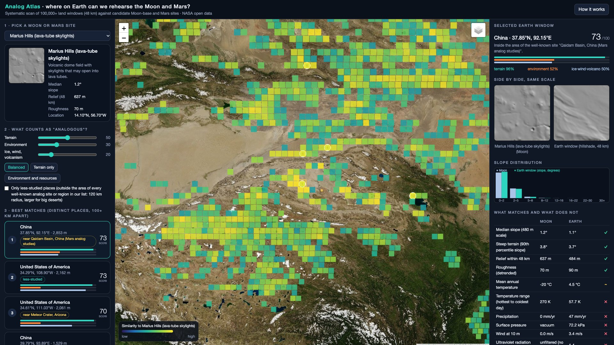

TeamTeam Infinity
Members{{MEMBERS}}
ChallengeIdentify Earth Locations that Analog the Permanent Moon Base Locations and Mars
Earth windows scanned
Moon and Mars sites
environment variables (NASA POWER)
separate scores





| # | Place | Status | Score |
|---|
"Less-studied": outside the area of every well-known analog site or region in our list.

| # | Place | Status | Score |
|---|

Mission teams, educators and the public can query any Moon or Mars site and get a ranked, explained, downloadable shortlist of Earth places, including ones nobody lists as analogs.
Climate is a 0.5° reanalysis; polar elevation is coarser; geology and minerals are not scored; the list of known sites is ours. Earth cannot reproduce gravity, vacuum or radiation.
Add mineralogy and surface materials, finer 120 m scale, more NASA Earth data (MODIS, ECOSTRESS, SAR), caves, and field validation with Local Event partners.
Data: NASA LRO LOLA and MGS MOLA (USGS Astrogeology); elevation tiles from NASA SRTM and other open sources; NASA POWER (MERRA-2); NASA GIBS imagery; Smithsonian GVP; IAU Gazetteer; Natural Earth. Full list with licences in the README.